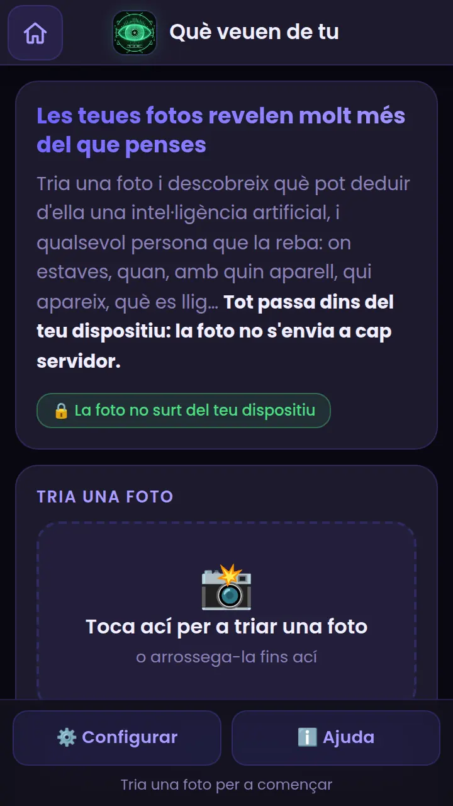
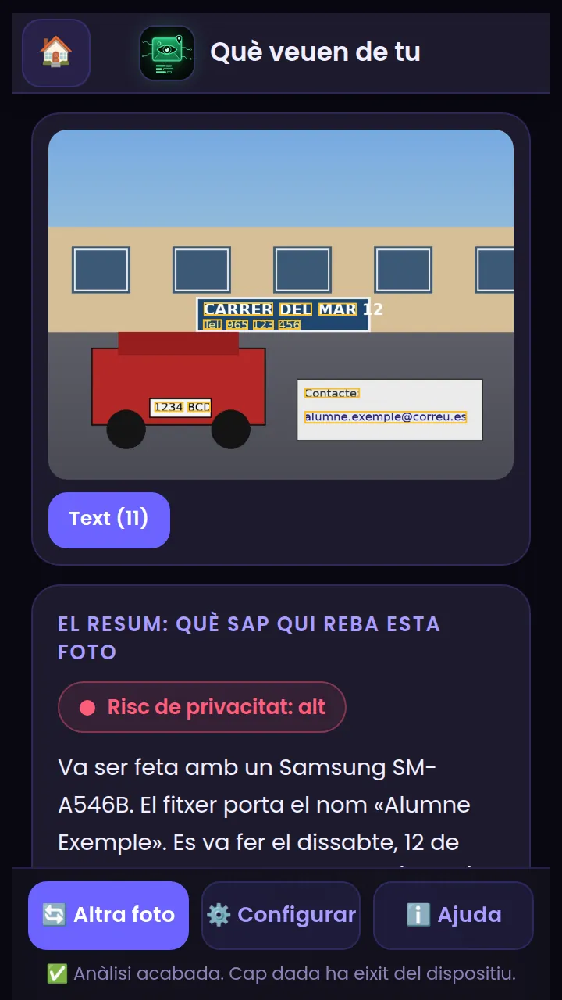
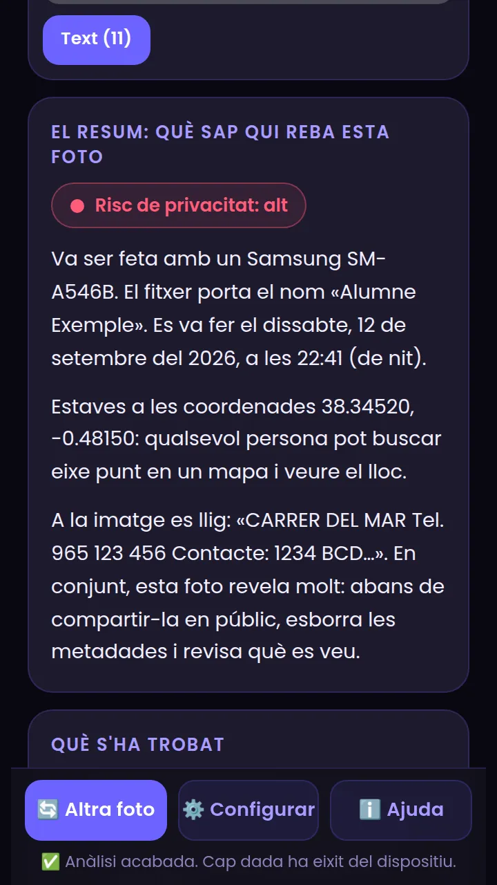
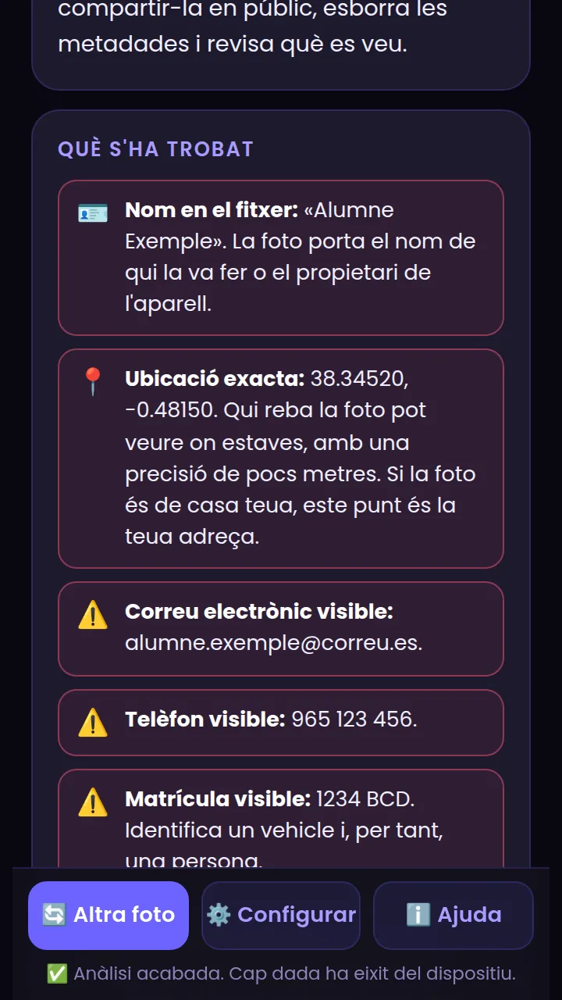
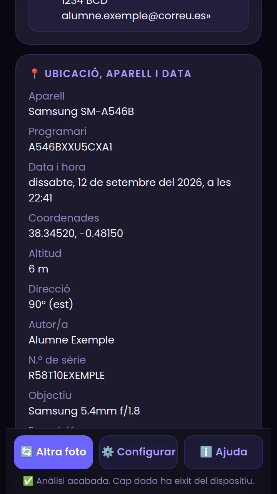
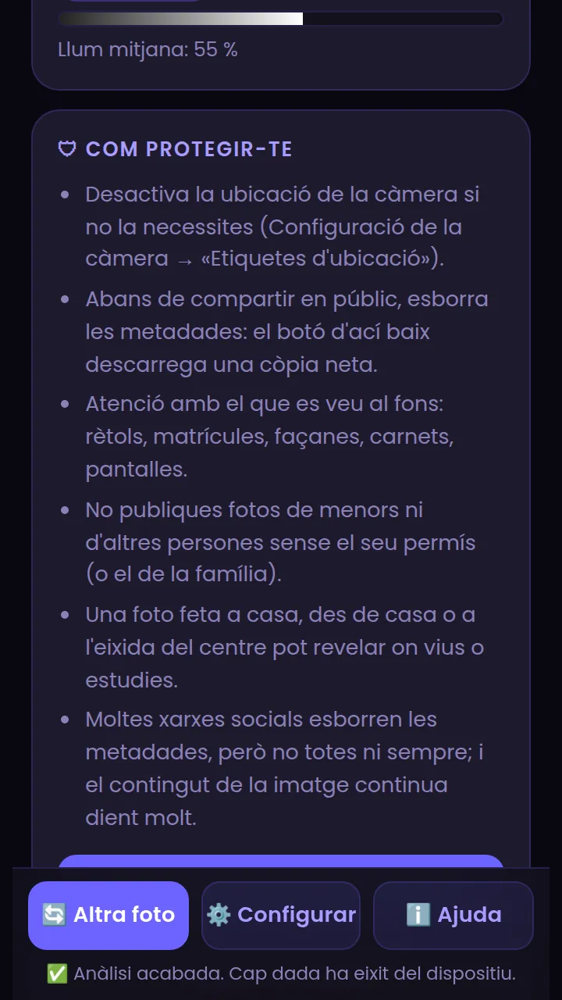
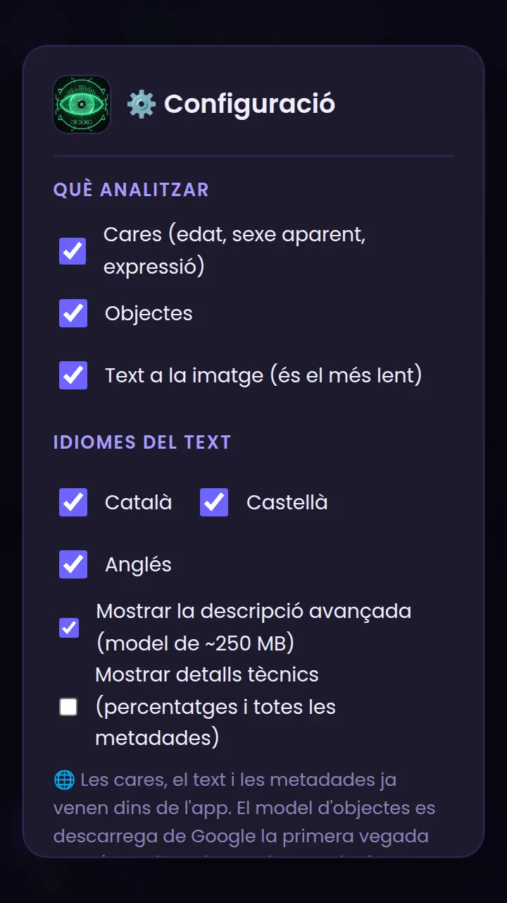

Què veuen de tu, pas a pas
Descobreix tot el que una foto teua revela abans de compartir-la: ubicació, aparell, persones, text i objectes. Tot s'analitza al teu mòbil, sense enviar res.
Què és i per a què serveix
Cada foto que fas amb el mòbil porta, a més de la imatge, una etiqueta amagada (les metadades) i, a vegades, pistes en el propi dibuix: un cartell, una matrícula, una cara, una façana. Què veuen de tu t'ensenya tot el que una persona o un programa podria esbrinar d'una foto teua abans que la compartisques.
Què busca
- Metadades (EXIF): on es va fer (GPS), quan, amb quin aparell, número de sèrie, nom de l'autor/a.
- Persones: quantes cares hi ha i una estimació d'edat, sexe aparent i expressió.
- Objectes i escena: persones, vehicles, animals, mòbils, tasses… i si sembla un lloc interior o exterior.
- Text (OCR): cartells, matrícules, telèfons, correus o adreces que es puguen llegir.
- Colors i llum: la paleta i si la foto és de dia o de nit.
Tria una foto
Obri Què veuen de tu des de la pantalla principal de PIAR. Tens tres maneres de començar:
- 📷 Fer una foto: obri la càmera del mòbil.
- 🖼 Triar de la galeria (o tocar la zona de punts): tria una foto que ja tingues.
- Exemples: dos dibuixos de prova (Cartell amb ubicació i El mateix, sense metadades) per a veure com funciona sense usar cap foto teua. En un ordinador també pots arrossegar una foto fins a la zona de punts.

Llig el resultat
En uns segons (la primera vegada, un poc més perquè carreguen els models) veuràs la foto amb requadres i, a sota, el resum.


| Zona | Què és |
|---|---|
| Requadres | Violeta = cares (amb l'edat estimada), verd = objectes, groc = text llegit. Els botons de sota de la foto els mostren o amaguen. |
| Risc de privacitat | Baix, mitjà o alt. Puja amb la ubicació exacta, el nom de l'autor/a, el número de sèrie, cares (sobretot de menors) i dades personals llegides (telèfon, correu, matrícula…). |
| El resum | Tres paràgrafs, com ho diria algú que veu la foto: qui/quan/amb què, on, i qui hi apareix i què es pot llegir. |
| Què s'ha trobat | La llista detallada, ordenada de més a menys important: roig = molt sensible, groc = a vigilar, gris = informatiu, verd = tot bé. |
Les troballes, una per una


📍 Ubicació, aparell i data
Si la foto porta GPS, veuràs les coordenades, l'altitud i cap on mirava el mòbil, i un botó per obrir el lloc en OpenStreetMap (eixe botó necessita Internet; la resta no). També es mostra la marca i el model del mòbil, la versió del programari, l'objectiu de la càmera, el número de sèrie si hi és, l'autor/a i la data i l'hora exactes. Amb activar Mostrar detalls tècnics a la configuració, apareix la llista completa de metadades.
🧑 Persones
Per a cada cara es mostra un detall xicotet amb l'edat aproximada, el sexe aparent i l'expressió (content/a, trist/a, sorprés/a…). Són estimacions d'un model molt menut: poden errar molts anys. Si calcula que hi ha algú menor, ho marca amb una alerta, perquè eixes fotos convé compartir-les amb molta cura.
🔍 Objectes i 🔤 Text
L'app reconeix unes 80 classes d'objectes (persona, cotxe, gos, mòbil, tassa, cadira…) i en deduïx si sembla un lloc interior o exterior. El text es llig amb OCR; si hi ha telèfons, correus, matrícules, DNI, IBAN o adreces, els marca com a dades personals visibles.
🎨 Colors i llum
Mostra els cinc colors dominants i si la foto és fosca o molt lluminosa (una pista de si és de nit o de dia).
Com protegir-te

Al final del resultat tens consells pràctics i dos botons:
- ⬇ Descarregar sense metadades: baixa una còpia de la foto sense cap dada amagada (GPS, aparell, data, autor/a). El nom acaba en
-sense-metadades.jpg. Compte: no esborra el que es veu en la imatge (cartells, cares, matrícules). - 🗑 Esborrar l'anàlisi: tanca el resultat i oblida la foto de la memòria de l'app.
Consells ràpids
- Desactiva la ubicació de la càmera si no la necessites (Configuració de la càmera → «Etiquetes d'ubicació»).
- Abans de compartir en públic, esborra les metadades o fes una captura de pantalla de la foto.
- Mira el fons: rètols, matrícules, façanes, carnets, pantalles.
- No publiques fotos de menors ni d'altres persones sense el seu permís.
- Una foto feta a casa, des de casa o a l'eixida del centre pot revelar on vius o on estudies.
- Moltes xarxes socials esborren les metadades, però no totes ni sempre; i el contingut de la imatge continua dient molt.
Configuració

| Opció | Què fa | Recomanació |
|---|---|---|
| Cares | Detecta cares i estima edat, sexe aparent i expressió. | Activada. |
| Objectes | Reconeix objectes i escena. Necessita descarregar el model una vegada. | Activada. |
| Text a la imatge | Llig cartells, matrícules, telèfons… És l'anàlisi més lenta. | Desactiva-la si el mòbil va molt just. |
| Idiomes del text | Català, castellà i anglés. Com menys en marques, més ràpid va. | Només els que necessites. |
| Mostrar detalls tècnics | Afig percentatges i la llista completa de metadades. | Per a classe o per a curiosos. |
També hi trobaràs el selector d'idioma (valencià, castellà, anglés). La configuració es guarda al mòbil.
Sense Internet
Sí, funciona sense connexió, però cal haver-ho carregat abans una vegada:
- Amb Internet (millor amb Wi-Fi), a la pantalla principal de PIAR prem «Descarregar per a ús sense Internet». Es guarden les llibreries, els models de cares i de text, i el model d'objectes.
- També pots obrir Què veuen de tu amb Internet i analitzar una foto: tot el que s'use quedarà guardat.
- Després ja pots usar-la en mode avió.
Idees per a classe
- Cacera de pistes: cada grup fa una foto «normal» (el pati, un carrer, l'habitació) i comprova què en dedueix l'app. Quina informació sorprén més?
- Amb i sense: compareu els dos exemples (amb metadades i sense) o una foto vostra abans i després de descarregar sense metadades.
- Qui ho veu? Debat: què pot fer una persona desconeguda amb la ubicació, l'horari i el nom? I una empresa?
- Límits de la IA: busqueu fotos on l'edat, l'expressió o els objectes s'estimen malament. Per què falla? Què diu això sobre fiar-se d'una IA?
- Decàleg de foto segura: redacteu entre tots 5 normes per a compartir fotos.
Si alguna cosa no va bé
| Què passa | Per què | Com es resol |
|---|---|---|
| No apareix la ubicació en una foto que sí en tenia | L'app o el selector per on ha passat la foto ha esborrat les metadades. | Tria la foto directament des de la galeria o l'app de fitxers; o prova amb l'exemple. |
| «Objectes: no disponible sense Internet» | El model d'objectes encara no s'ha descarregat. | Connecta't i prem «Descarregar per a ús sense Internet» a la pantalla principal. |
| El text és incomplet o té errors | L'OCR és sensible a la mida, l'enfocament i la llum. | Prova amb una foto més nítida i marca l'idioma correcte a la configuració. |
| Tarda molt | El mòbil és antic o la foto és molt gran. | Desactiva el text i/o les cares a la configuració; tanca altres apps. |
| No es pot obrir la imatge | Format no admés (p. ex. HEIC en alguns navegadors). | Fes una captura de pantalla de la foto o canvia el format a JPG. |
| La càmera no s'obri | No s'ha donat permís o el navegador no l'ofereix. | Tria «Triar de la galeria»; o en Chrome: 🔒 al costat de l'adreça → Permisos → Càmera. |